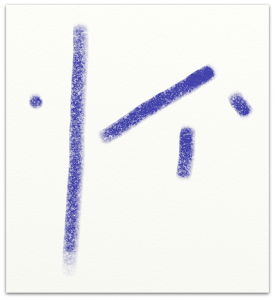
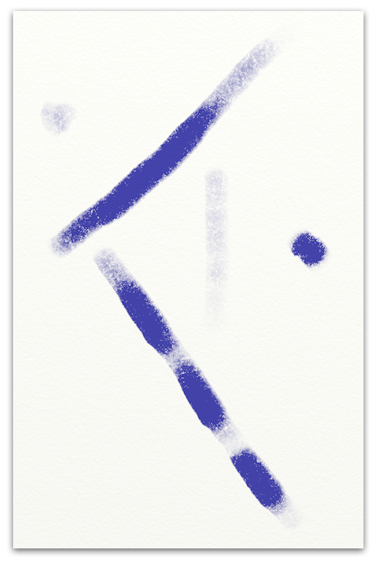
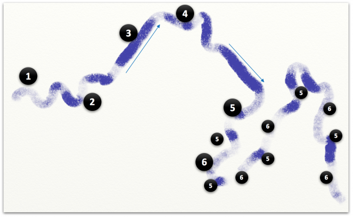
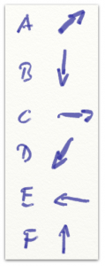
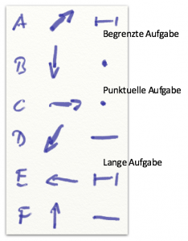
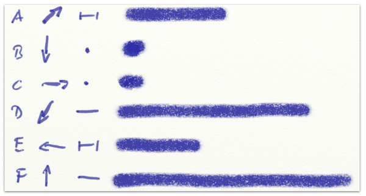
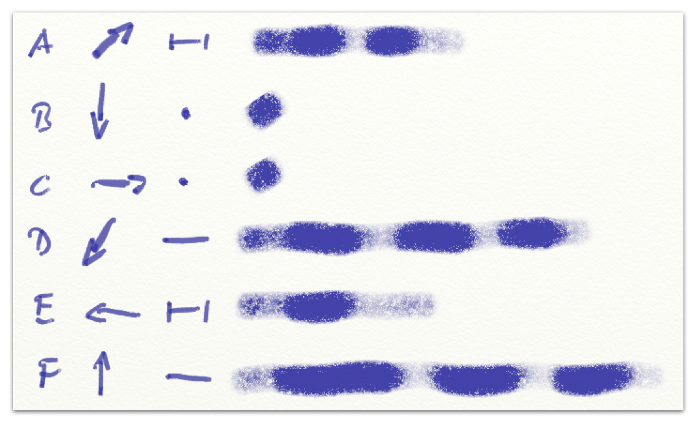
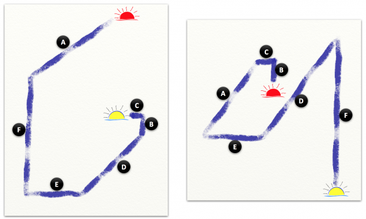
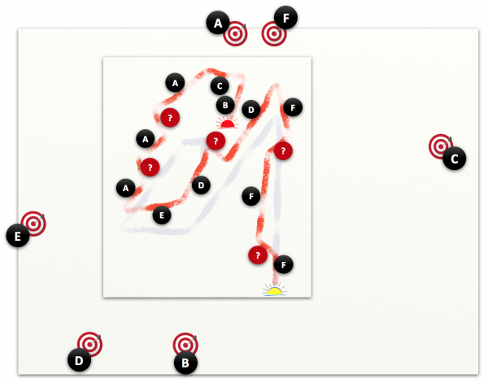

Attention, please!
Irgendwas ist immer. Ihre Aufmerksamkeit soll bald hier, bald dort sein. Aufgaben, Themen, Dinge wollen, dass Sie sich um sie kümmern. Selten, dass Sie sich dem, was Wichtig ist, ausreichend widmen können. Das Dringende schiebt sich dauernd in den Vordergrund. Feuerwehreinsatz folgt auf Feuerwehreinsatz. Und abends fragen Sie sich „Was habe ich eigentlich den ganzen Tag gemacht?“
Wenn sich Ihre Arbeitszeit mehr oder weniger so anfühlt: Willkommen im Club! Sie sind nicht allein. Vielen, vielen Menschen geht es so mit ihrer Arbeitszeit im Office. Vom Assistenten bis zur ausgewachsenen Wissensarbeiterin: das Gefühl der Überforderung grassiert.
Tatsächlich halte ich es für ein Gefühl der Überforderung, denn die Überforderung ist nach meiner Erfahrung selten in der Sache begründet. Sie entsteht vielmehr durch ineffizienten und ineffektiven Einsatz der vorhandenen Ressourcen, hier: Fachkompetenz und Zeit.
Aufmerksamkeit: gestalten statt reagieren
Wenn die Aufmerksamkeit klug gestaltet würde, wäre die Last deutlich kleiner bis hin zu entspannter Arbeit.
Doch das ist sie eben nicht. Die Aufmerksamkeit wird nicht klug gestaltet. Mit ihr wird nicht bewusst umgegangen. Sie wird nicht sorgfältig gesteuert. In der Arbeit wird nur selten agiert, meistens wird reagiert. Reaktion jedoch bedeutet, dass Aufmerksamkeit nicht gestaltet wird, sondern Intensität, Dauer, Richtung mehr oder weniger zufällig sind.
Der unerwünschte, jedoch zu erwartende Effekt bleibt denn auch nicht aus: Erschöpfung und ein Gefühl des Zurückbleibens hinter dem, was anliegt.
Aufmerksamkeitsdefizitsyndrom (ADS) wäre eigentlich eine passende Bezeichnung. Ein klinisches Krankheitsbild möchte ich damit zwar nicht heraufbeschwören, doch selbst wenn das Verhalten nicht ungesund sein sollte, so ist es zumindest unökonomisch.
Arbeiten in der (gefühlten) Überforderung ist immer verschwenderisch. Die Verschwendung besteht in Qualitätsmängeln, die sich einschleichen (inkl. daraus folgender Nachbesserungen), in hektikinduzierten Konflikten, in Mehrarbeit durch Multitasking, in Ineffizienz durch Ermüdung, in unnötiger Arbeit durch falsche Priorisierung. Soll ich weitermachen?
Aufmerksamkeitsgestaltung ist also kein Sahnehäubchen auf guter Arbeit, sondern ein sine qua non, das Fundament. Professionelle Arbeit fängt mit Aufmerksamkeitsgestaltung an. Ohne sie kann sich nämlich Fachkompetenz nicht wirklich entfalten.
„Alle Mann an Deck!“ reicht nicht aus, wenn ein Stapel Arbeit zu erledigen ist. Die Aufmerksamkeit muss dann auch noch angemessen dirigiert werden. Ohne ein folgendes „Attention, please!“ (dt. „Achtung!“ oder „Alle mal herhören!“) nützen die mobilisierten Kräfte wenig.
Also: Aufmerksamkeitsgestaltung (engl. Attention Design) braucht es, wenn Sie mehr schaffen und weniger geschafft sein wollen.
Aufmerksamkeitsgestaltung
Zeitmanagement ist out, Attention Design ist in, habe ich in einem anderen Blogartikel geschrieben. Ihre Aufmerksamkeit ist formbar, nicht ihre Lebenszeit. Doch was sind die Formen der Aufmerksamkeit? Welche Gestalten kann sie haben? Sie sieht Aufmerksamkeit überhaupt aus?
Für mich existiert Aufmerksamkeit in zwei Dimensionen:
- Richtung: Aufmerksamkeit ist immer auf etwas gerichtet, ihren Gegenstand. Das kann eine Aufgabe sein, ein Buch, ein Gespräch
- Ausdehnung: Aufmerksamkeit kann kürzer oder länger auf einen Gegenstand gerichtet sein.
Wenn Sie nicht gerade schlafen, ist Ihre Aufmerksamkeit immer auf irgendetwas gerichtet – fragt sich nur wie lange. Und es fragt sich, ob Sie diese Ausrichtung beabsichtigt haben.
Richtung
Sie konzentrieren sich 2 Minuten auf die Zusammenstellung ihrer Einkaufsliste, danach telefonieren Sie 5 Minuten mit einer Freundin, um sich zu verabreden, anschließend suchen Sie 3 Minuten den Autoschlüssel. Ihre Aufmerksamkeit wechselt hier zwar sichtbar und relativ häufig die Richtung, doch das geschieht sehr bewusst.
Anders, wenn Sie im Zug sitzen und eine Zeitschrift lesen. Zunächst sind Sie konzentriert dabei, doch dann schweifen Ihre Gedanken ab. Nicht nur, dass der Schaffner sie kurz unterbricht, Sie tauchen immer wieder nach Minuten auf aus Gedanken, die nichts mit den Artikeln in der Zeitschrift zu tun haben. Die Zugfahrt macht Sie unkonzentriert und schläfrig.
Auch hier wechselt Ihre Aufmerksamkeit die Richtung, aber das ist weniger bewusst. Sie bemerken immer wieder nicht, was eigentlich Gegenstand Ihrer Aufmerksamkeit ist.
Mir scheint, dieser typische Effekt verdient eine eigene Dimension. Eigentlich lässt er sich zwar mit Richtung und Ausdehnung beschreiben, doch die „Qualität“ ist für mich irgendwie anders. Deshalb eine weitere Dimension für die Aufmerksamkeit:
- Intensität: Aufmerksamkeit ist mehr oder weniger stark, tief, fokussiert.
Ausdehnung
Wenn die Aufmerksamkeit bewusst die Richtung wechselt, wie im Multi-Tasking, dann kann sie in jede Richtung intensiv sein. Wechselt sie allerdings unbewusst die Richtung, schleichend, dann ist das kein Multi-Tasking, sondern nur eine Abnahme der Intensität. Das, wohin sie abschweift, ist kein wirklich beachtenswerter Gegenstand, den Sie bewusst wählen. Oder wenn, dann wäre die auf ihn gerichtete Aufmerksamkeit nicht der Rede wert. Meistens jedenfalls 😉 In diesem Fall würde ich also gar nicht von einem Richtungswechsel sprechen, sondern nur von einer Intensitätsabnahme in Bezug auf die eigentlich eingeschlagene Richtung.
Das klingt für Sie abstrakt?
Ich meine das allerdings sehr konkret. Denn aus diesen Dimensionen lassen sich sehr konkrete Bilder oder Gestalten von Aufmerksamkeit ableiten.
Hier Aufmerksamkeit, die auf unterschiedliche Gegenstände unterschiedlich ausgedehnt gerichtet ist:

In manchen Fällen ist die Ausdehnung sogar so gering, dass die Aufmerksamkeit scheinbar keine Richtung hat. Sie ist dann punktuell. Das ist für mich der Fall, wenn die Ausdehnung nicht der Rede wert ist.
Welche Ausdehnung punktuell für Sie ist, ist relativ zu Ihren Ansprüchen, Aufgaben, Rhythmen. Für mich sind es in der Arbeit 2, 5, maximal 15 Minuten, denen ich keine Ausdehnung zuschreiben würde.
Und jetzt noch Ausdehnung in der dritten Dimension, d.h. mit mehr oder weniger Intensität:

Manchmal ist die Aufmerksamkeit stark, manchmal schwach. Manchmal wechselt die Intensität auch bei gleicher Richtung. Eben noch waren Sie versunken in eine Aufgabe, doch dann lenkt Sie das Ping einer neuen Nachricht im Postfach ab. Oder Sie schauen beim Bügeln Fernsehen. Dann ist die Aufmerksamkeit beim Bügeln nicht intensiv, vermute ich – und beim Fernsehen auch nicht 😉
Wenn Sie genau hinsehen, ist die Aufmerksamkeit auch eher nicht sofort intensiv, wenn Sie mit einer Sache beginnen. Sie beginnt schwach und wird tiefer. Ebenso am Ende zumindest bei größerer Ausdehnung einer Aufmerksamkeitsspanne. Wenn Sie sich 2 Stunden bis zum Mittagessen auf einen abzugebenden Bericht konzentriert haben, verliert die Aufmerksamkeit gegen Ende an Intensität, sie schwindet.
Mehr als 1-2 Stunden „volle Aufmerksamkeit“ halte ich für ziemlich unmöglich. Und auch der Glaube an diese Ausdehnbarkeit scheint mir gewagt. Die Pomodoro-Technik hat nicht umsonst eine Taktdauer von 25 Minuten „pro Tomate“ und empfiehlt nach 4 Takten eine längere Pause.
Reale Aufmerksamkeitsform
Mit diesen Grundformen der Aufmerksamkeit möchte ich Ihnen als erstes zeigen, wie für mich typischerweise die Aufmerksamkeit während eines Bürotages geformt ist.

Nein, das ist keine Kunst, trotzdem kann das erstmal nicht weg 😉
Ihre Aufmerksamkeit mäandriert von links nach recht über den ganzen Tag: Sie beginnen den Tag entspannt (1), dann erledigen Sie ein paar Dinge vom Vortag (2), dann versuchen Sie sich einer Aufgabe länger zu widmen (3), doch bald springen Ihnen Ablenkungen in den Weg. Nach ein paar Umwegen (4) sind Sie bei einer zweiten Aufgabe, mit einer gewissen Ausdauer und Intensität. Doch lange währt die Konzentration nicht. Im letzten Tages drittel geht es bunt daher (5). Die Kollegen wollen noch schnell das eine oder andere von Ihnen, Kunden heischen nach Ihrer Aufmerksamkeit. Außerdem sind Sie mit den Gedanken immer wieder nicht ganz bei der Sache (6): die Anstrengungen des Tages fordern Ihren Tribut und Sie überlegen schon, wie Sie den Abend gestalten und was Sie noch einkaufen müssen.
Nicht nur mäandriert ihre Aufmerksamkeit, sie tut das auch noch meistens in Reaktion auf Unvorhergesehenes. Auf Ihrem Tagesplan standen nur zwei Richtungen, in die Sie aufmerksam sein wollten (Pfeile). Alle anderen Richtungen waren für Sie nicht vorhersehbar.
Verlässlich und entspannt arbeiten, d.h. Agieren sieht für mich anders aus. Das obige „Kunstwerk“ ist keine Kunst. Das kann jeder, der seine Aufmerksamkeit nicht gestaltet. Das passiert auch jedem, der kein Attention Design betreibt.
So, jetzt kann das weg!
Der Gestaltungsrahmen
Wenn Sie effizienter und effektiver mit Ihrer Aufmerksamkeit umgehen wollen, dann braucht das einen Plan. Ein Kunstwerk der Aufmerksamkeitsgestaltung entsteht nicht zufällig.
Zunächst müssen Sie sich des Materials vergewissern, das Sie gestalten wollen. Seine Dimensionen haben Sie schon kennengelernt. In denen lässt sich Aufmerksamkeit formen wie Farbe auf einer Leinwand.
Dazu kommen allerdings noch „Formgesetze“. So, wie nicht jeder Gebrauch von Farbe in einem Publikum einen bestimmten gewünschten Effekt erzielt, so erreichen Sie auch nicht mit jeder beliebigen Aufmerksamkeitsgestaltung einen erfüllten und erfüllenden Arbeitstag. Nicht jeder Plan für Ihre Aufmerksamkeit ist ein guter Plan.
Drei Formgesetze habe ich bisher gefunden:
- Je höher die Intensität der Aufmerksamkeit, desto kürzer ihre Spanne. Sie können einfach nicht beliebig lange intensiv auf einen Gegenstand konzentriert sein – so wie Sie mit einem Pinsel voller Farbe keine beliebig langen Striche in gleicher Stärke ziehen können.
- Veränderungen der Aufmerksamkeitsrichtung gehen mit einer Verringerung der Intensität einher. Wenn Sie zwischen einer Aufgabe, der Beantwortung von Fragen durch Kollegen, Kundenanrufen und weiteren Aufgaben während des Tages wechseln, kostet Sie das „Aufmerksamkeitsenergie“. Und das umso mehr, je unerwarteter diese Wechsel sind.
- Je länger die Aufmerksamkeit auf einem Gegenstand ruht, desto anfälliger wird sie für ungewollte Richtungswechsel. Das hat nicht mit abnehmender Intensität zu tun, sondern mit der wachsenden Kraft anderer aufmerksamkeitsheischender Gegenstände in Ihrer Umwelt. Sie arbeiten nicht auf einer Insel, sondern sind eingebunden in ein Geflecht, in dem Sie andere brauchen und von anderen gebraucht werden.
Formgesetze nenne ich sie, weil sie für mich gelten wie physikalische Gesetze. Wenn Sie einen Gegenstand halten und ihn loslassen, fällt er zu Boden. Das Gravitationsgesetz wirkt. Wenn man das weiß, kann man Gegenmaßnahmen ergreifen, um Ziele innerhalb des Gravitationsgesetzes und anderer zu erreichen.
Bitte verstehen Sie daher die Formgesetze nicht als Behinderungen, sondern als Rahmenbedingungen, die es Ihnen erleichtern, „schöne“ Aufmerksamkeitsformen zu kreieren. Sie begrenzen den Entscheidungsraum, in welchem Sie sich bewegen. Mit Ihnen können Sie leichter auf Kurs bleiben hin zu einem entspannt produktiven Tag.
Gelungenes – Schönes, Beeindruckendes, Hilfreiches, Wertvolles – gibt es stets nur in einem Bezugsrahmen. Den spannen die „Materialdimensionen“ und Formgesetze auf. Wenn Sie etwas schaffen, dann nicht trotz ihrer, sondern wegen ihnen!
Aufmerksamkeit gestalten
Nun zum Plan. Die Komposition Ihrer Aufmerksamkeit beginnt mit einer Sammlung der Gegenstände, denen Sie sich widmen wollen. Das sind zunächst nur Richtungen, in die Ihre Aufmerksamkeit fließen soll.
Was wollen Sie tun? Welche Aufgaben sind auf Ihrem Zettel? Worum müssen Sie sich kümmern? Aufmerksamkeitsgestaltung beginnt – wie könnte es anders sein? – mit einer Todo-Liste.

Anschließend gehen Sie durch diese Liste und teilen die Gegenstände in drei Ausdehnungsgruppen ein. Brauchen Sie punktuelle, begrenzte oder (unbestimmt) lange Aufmerksamkeitsspanne?
Punktuelle Aufmerksamkeit hat keine relevante Ausdehnung. Wenn eine Aufgabe in 5 bis 10 Minuten oder weniger komplett erledigt ist, dann markieren Sie sie als punktuell.
Eine lange Aufmerksamkeitsspanne hingegen haben die Gegenstände, die im Rahmen der Formgesetze nicht in einem Tag komplett erledigt werden können. Bringen Sie bei der Beurteilung in Anschlag, dass hohe Aufmerksamkeitsintensität nur begrenzt möglich ist und die Kräfte anderer Gegenstände über den Tag zunehmen. Nach meiner Erfahrung gehören in diese Gruppe alle Aufgaben, die länger als 3-4 Stunden zur Bewältigung brauchen.
Begrenzte Aufmerksamkeitsspanne erfordern schließlich die Gegenstände, bei denen zwischen 10 Minuten und 3-4 Stunden zur Erledigung nötig sind.

Ihr Gestaltungsmaterial liegt jetzt bereit. Sie können sich an die Komposition machen. Zunächst ziehen Sie die Aufmerksamkeit für jeden Gegenstand auf eine ideale Länge.
Punktuelles bekommt einen Punkt. Begrenztes bekommt die Ausdehnung, derer es bedarf. Langes müssen Sie kürzen. Wie viel von einer langen Aufgabe bringen Sie im Tag unter? Wenn es eigentlich 6 Stunden sind, wollen Sie dann 4 Stunden daran arbeiten oder nur 2?

Sehr wahrscheinlich werden Sie nach diesem Planungsschritt feststellen, dass Ihr Arbeitstag nicht genügend Raum bietet, um all die Aufgaben mit der Wunschausdehnung unterzubringen. Und selbst wenn alles genau hineinpasst, haben Sie sich zu viel vorgenommen.
Bedenken Sie wieder die Formgesetze! Aufmerksamkeitswechsel reduziert die Intensität, d.h. vergrößert die notwendige Ausdehnung. Und sehr lange können Sie ohnehin nicht in einem Stück sehr aufmerksam sein. Sie müssen nun Ihren ersten Kompositionsansatz überarbeiten.
Eigentlich kann ich nicht empfehlen, überhaupt eine Ausdehnung von mehr als zwei Stunden zu planen. Und auch die ist mit wellenartiger Intensität zu denken. Das bedeutet, einige als begrenzt eingestufte Aufgaben werden nun zu langen Aufgaben, die Sie nicht komplett in einem Tag unterbringen – allemal nicht, wenn Sie mehrere lange Aufgaben bearbeiten wollen.
Ein realistischerer Ansatz sieht daher eher so aus:

Und nun zur Anordnung. Wie verteilen Sie die Aufmerksamkeit über den Tag? Arbeiten Sie das Punktuelle en bloc am Tagesanfang ab? Oder lassen Sie es für den Nachmittag, wenn Sie erwarten, eher gestört zu werden? Stellen Sie die langlaufenden Gegenstände an den Anfang, um daran verlässlicher zu arbeiten? Oder wollen Sie quick wins einfahren mit Erledigung begrenzter Aufgaben?
Heute möchte ich Ihnen dazu keine weiteren Vorschläge machen, sondern lediglich zeigen, wie unterschiedlich Aufmerksamkeitsgestaltungen ausfallen können:

Und dann… die Realität! Denn auch Ihr schönstes Attention Design werden Sie kaum je im Office-Alltag manifestieren können. Solange sich die Abweichungen jedoch in einem gewissen Rahmen bewegen, ist das auch ok und zu erwarten.
Wenn die Abweichungen aber größer sind, dann sollten Sie darüber nachdenken, Ihre Kompositionen von vornherein anders, realistischer auszulegen. Oder – allemal falls eine andere Komposition mit den Formgesetzen in Konflikt geriete: Sie müssen Ihr Umfeld anders gestalten. Nicht jedes Umfeld ist „formschönen“ Aufmerksamkeitsgestaltungen zuträglich.
Wesentlich ist jedoch, dass Sie überhaupt eine Form für die Bewegung Ihrer Aufmerksamkeit am Tag vor Augen haben! Ohne solch eine Wunschform, haben Sie keine Möglichkeit, Abweichungen festzustellen. Sie haben keinen Maßstab, kein Maß. Die Aufmerksamkeitsgestaltung ist wie eine Karte, auf der Sie Ihren Weg durch den Tag verfolgen können.
Mit der Aufmerksamkeitsgestaltung legen Sie fest, auf welches Ziel Sie Ihre Aufmerksamkeit wie intensiv und ausgedehnt richten wollen.

Wenn Sie dann nach Plan starten, aber abweichen (?), können Sie sich sehr einfach jederzeit neu orientieren. Sie nehmen das Ziel wieder in den Blick und konzentrieren sich darauf hin. Bis zur nächsten Abweichung. Anschließend wieder Neuausrichtung und Konzentration.
Die reale rote Aufmerksamkeitsgestalt weicht von der geplanten blauen ab. Doch da die Ihrem Tag als Karte mit den Zielen unterliegt, wirkt sie als korrigierende Kraft. Sie sind nie orientierungslos. Und wenn Sie ihr Attention Design ernst nehmen, dann sieht die reale Form zwar anders aus, doch die Grundidee ist am Ende immer noch erkennbar.
Zusammenfassung
„Erfolg kommt nicht von ungefähr“ heißt es. Das stimmt. Denn ohne eine bewusste Gestaltung des Aufmerksamkeitsflusses ist nicht zu erwarten, dass Sie sich Erfolgsrelevantem ausreichend widmen. Und entspannt! Denn langfristigen Erfolg gibt es nicht ohne nachhaltiges Verhalten. Dazu gehört, nicht ständig unter Stress zu stehen.
Ob Sie Attention Design mit „bunten Bildern“ wie hier dargestellt betreiben oder weniger konkret, ist unwesentlich. Ich wollte Ihnen hier aber zumindest einmal Aufmerksamkeit „zum Anfassen“ geben. Wenn Sie die Dimensionen der Aufmerksamkeit und die Formgesetze verinnerlichen, sind „Malereien“ überflüssig. Zu Anfang mögen Sie Ihnen vielleicht ja aber helfen. Versuchen Sie es einmal. „Attention, please!“ Dazu möchte ich Sie vor allem ermuntern. Gehen Sie mit Ihrer Aufmerksam bewusst um. Sie ist einmalig.
Weitere Artikel

Puffer sichern Flow
Es wird allerhöchste Zeit, sich von der Idee, dass nur wer am Limit arbeitet, effizient sei, zu verabschieden. Unter Volllast, ganz ohne Puffer zu arbeiten ist eine „gute“ Voraussetzung für Unzuverlässigkeit, Fehler …

Kollaboration im Office mit Kanbanize
Ein Tool, was mich für die digitale Kollaboration im Office begeistert ist Kanbanize. Dort kann man wirklich sehr fortgeschritten und smart zusammenarbeiten. Mit seinen verschiedenen Perspektiven auf den Flow im Office, der …